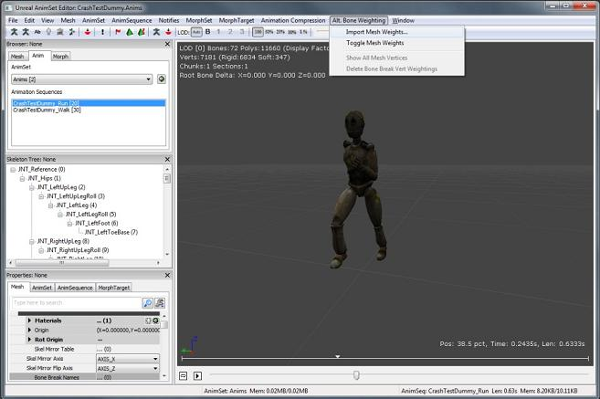
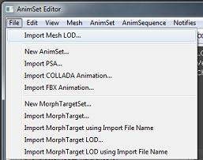

UDN
Search public documentation:
FBXImporterUserGuideCH
English Translation
日本語訳
한국어
Interested in the Unreal Engine?
Visit the Unreal Technology site.
Looking for jobs and company info?
Check out the Epic games site.
Questions about support via UDN?
Contact the UDN Staff
日本語訳
한국어
Interested in the Unreal Engine?
Visit the Unreal Technology site.
Looking for jobs and company info?
Check out the Epic games site.
Questions about support via UDN?
Contact the UDN Staff
虚幻 FBX 导入器用户指南
概述
FBX是由Autodesk拥有并开发的文件格式。它提供了数字内容在类似于Autodesk MotionBuilder、Autodesk Maya和Autodesk 3ds Max数字内容创建应用程序之间的互用性。Autodesk MotionBuilder软件本身就支持FBX，而Autodesk Maya和Autodesk 3ds Max需要使用FBX插件。 在这个版本中，导入器可以导入静态网格物体、骨架网格物体和骨架动画。 相比当前的导入方法来说，虚幻FBX导入器的优点是：
- 一个单独的文件格式中的静态网格物体、骨架网格物体、动画。
- 多个 资源/内容 可以包含在一个单独的文件中。
- 在一个导入操作中进行多个LODs及 顶点变形/混变形 的导入。
- 较长的分析时间。
- 文件命名机制更加复杂。
导入对话框窗口
当用户从内容浏览器或AnimSet编辑器中选择'导入'选项并选择要导入的FBX文件时，将会出现这个对话框。

综述
这些选项既可以应用到静态网格物体上也可以应用到骨架网格物体上。- Import Type(导入类型) - 自动从选中的文件头继承来。如果文件包含Deformer（变形器）,那么Import Type(导入类型)设置为骨架网格物体，否则设置它��静态网格物体。当导入类型是骨架网格物体时，将不会导入FBX文件中的静态网格物体。
- 如果原始类型是静态网格物体，但是用户把它改为了骨架网格物体，那么将不会导入任何东西，因为没有找到能够变形的骨架。
- 如果原始的类型是骨架网格物体，但是用户把它改为静态网格物体，那么将会把它导入为静态网格物体。
- Override Full Name - 如果启用这一项，将会使用名称字段作为网格物体名称。否则，将会使用FBX文件中的网格物体的名称。
- Import Mesh LODs - 如果启用该选项，那么将会从定义在文件中的LOD创建虚幻网格物体的LOD模型。否则，则仅从LOD组中导入基本的网格物体。对于骨架网格物体来说，LOD模型可以植皮到同样的骨架或不同的骨架上。如果LOD模型被植皮到了不同的骨架上，那么它必须满足虚幻LOD的要求，但是根骨骼的名称是不同的，因为FBX导入器自动地重命名跟骨骼。
- Import Tangents - 会为内容导入切线基础（如果它存在于 FBX 文件中），而不需要计算一个新的切线。如果您在 DCC 程序中使自定义调整变为切线，那么可以使用它。注意： 它可能会增加顶点数量来维持唯一的切线。
骨架网格物体
- Import Morph Tergets - 为骨架网格物体创建虚幻的顶点变形对象。既支持Maya Blendshapes(混合形状)修改器也支持3ds Max Morph(顶点变形)修改器。
- Import Animations - 根据选中的骨架网格物体的FBX文件中所有的可用动画创建新的动画集。
- Import Rigid Animation - 会在文件中使用任意刚体动画数据创建骨架网格物体和 AnimSet。
- Resample Animations - 将所有动画曲线重新采样为30FPS。根据导入动画集选项来完成。
- 高级
- Use T0 as Ref Pose - 会使用 Time=0 时的姿势作为参考姿势，而不是文件中的参考姿势
- Split Non Matching Triangles - 会通过分割切线保留骨架网格物体上的平滑组（使它们的顶点和法线唯一）。注意： 这样将会根据网格物体上的平滑组数量增加顶点数量
- Import Meshes In Bone Hierarcy - 会导入骨骼结构层次中的网格物体而不是将它们转换为骨骼（默认情况下会进行这项操作，因为工作流程有时候会包含作为虚拟骨骼使用的网格物体）
静态网格物体
- Combine Meshes - 将这个文件中的所有静态网格物体结合在一起组成一个单独的静态网格物体。
- Replace Vertex Colors - 如果启用了这一项，会将现有网格物体上的所有顶点颜色替换为文件中的顶点颜色。注意： 只有在现有网格物体上进行导入的时候才适用
- 高级
- Remove Degenerates - 如果启用这个选项将会删除退化三角形（面积为0的三角形）。使用近似值确定是什么因素使面积为0。如果您有一个非常小的网格物体，在导入的时候丢失了三角形，那么您可能需要取消勾选这个选项。默认情况下启用这个选项。
FBX 页面信息对话框
打开 FBX 场景信息窗口，它会显示有关要导入的 FBX 的场景统计信息。对于较大的文件，获取场景信息会花费较长的时间。

使用内容浏览器导入网格物体
你可以从内容浏览器中导入 FBX 文件，通过点击 Import（导入）按钮或右击您想要导入到的包然后从关联菜单中选择 Import（导入）... 导入文件。
- 点击‘导入’按钮，或者右击您的包并从弹出菜单中选择‘导入...’。
- 出现文件浏览器。
- 导航到您想导入的FBX文件并点击确定。
- 出现了导入UI编辑器。
- 为您的文件选择 Import Type（导入类型），或者将其保留为它的默认值。
- 设置您想要得到的导入选项。
- 点击确定。
- 然后内容浏览器会导入这个 FBX 文件。
 因为一个单独的FBX文件可以包含多个网格物体，所以导入器为每个模型创建一个单独的静态网格物体或骨架网格物体。但是，有两个例外情况：
因为一个单独的FBX文件可以包含多个网格物体，所以导入器为每个模型创建一个单独的静态网格物体或骨架网格物体。但是，有两个例外情况： - 如果多个FBX网格物体共享同一个骨架，那么多个FBX网格物体会组合成一个单独的虚幻骨架网格物体。
- 如果启用了‘组合为单独的网格物体’选项，那么把多个静态网格物体导入到一个单独的文件时，所有的静态网格物体将会组合成一个单独的静态网格物体。
更新静态网格物体或骨架网格物体
在重新导入静态网格物体或骨架网格物体时，导入器会保存现有的属性，更新这个文件中的静态网格物体或骨架网格物体，然后重新存储更新后的静态网格物体或骨架网格物体的属性。
导入的静态网格物体和骨架网格物体元素
FBX 导入器支持以下静态网格物体和骨架网格物体元素：
- Vertex Color - 虚幻引擎 3 只支持在每个网格物体上设置一个顶点颜色，所以只导入第一个顶点颜色设置。
- Smoothing groups - 默认情况下 FBX 导入器会导入平滑组表现形式，忽略切线和法线。这意味着不需要从源应用程序中导出 Smoothing Group（平滑组）。
材质
完全地支持一个单独的几何体上具有一种或多种标准材质，并且这些材质会被导入到虚幻引擎 3 中适当的材质插槽中。 如果 Material（材质）选项启用，那么将会导入其中包含法线贴图的材质。Invert Normal Map（翻转法线贴图）的选项允许用户翻转法线贴图，这一般是电子内容创建应用程序的法线贴图所需要的。导入的静态网格物体元素
FBX 导入器支持以下网格物体元素。
碰撞网格物体
在导入时会自动地创建碰撞模型。FBX中的碰撞模型的命名规则使用以下格式：- UBX_网格物体名称_碰撞模型后缀 - 正方体图元
- USP_网格物体名称_碰撞模型后缀 - 球体图元
- UCX_网格物体名称_碰撞模型后缀 - 凸面网格物体图元
如何设置静态网格物体 LOD
您可以为静态网格物体导入任何数量的 LOD 网格物体。如果导入的文件包含不止一个对象，那么多个 LOD 会被导入到虚幻引擎中。- 创建所有几何体(一个网格物体的LOD版本)。您不需要创建LOD组节点。
- 导出LOD版本到一个单独的FBX文件中。
- 在虚幻引擎编辑器中，打开您想要将 LOD 网格物体导入到的静态网格物体的 Static Mesh Editor（静态网格物体编辑器）。
- 选择 Mesh（网格物体），然后是 Import Mesh LOD（导入网格物体LOD）。
- 接下来导入一个网格物体的所有LODs。
导入的骨架网格物体元素
当导入一个骨架网格物体时，和同样的骨骼相绑定的网格物体将会被作为一个单独的骨架网格物体导入。这种行为的一个例外情况是当骨架网格物体是同一个LOD组的一部分并且绑定到同一个骨架时。在这种情况下，网格物体将会作为一个具有单独LOD层次的几何体导入。
顶点变形以及混合变形
FBX 导入器支持顶点变形以及混合变形。当启用 Import Morph（导入顶点变形）选项时，则会从网格物体的顶点变形(混合变形)信息中生成所需要的顶点变形目标，并将其作为这个骨架网格物体的顶点变形目标导入。 您可以通过以下方法从一个单独FBX文件中导入多个顶点变形目标：- 打开您想要将顶点变形目标导入到其中的骨架网格物体的 AnimSet 编辑器。
- 选择 File（文件），然后是 Import Morph Target（导入顶点变形目标）。
 使用 Import File Name（导入文件名称）选项的 Import MorphTarget（导入顶点变形目标）只会导入FBX文件中的第一个网格物体。
使用 Import File Name（导入文件名称）选项的 Import MorphTarget（导入顶点变形目标）只会导入FBX文件中的第一个网格物体。
动画
当导入骨架网格物体时，除了导入动画外，FBX导入器支持直接从动画集编辑器导入动画，具体方法如下：- 打开您想要将动画导入到其中的骨架网格物体的 AnimSet 编辑器。
- 选择 File（文件），然后是 Import FBX Animation（导入 FBX 动画）。
 当按照这种方式导入动画时，导入器不允许您把动画重新采样为30FPS。因此，我们推荐您在导出的时候重新采样所有动画。
当按照这种方式导入动画时，导入器不允许您把动画重新采样为30FPS。因此，我们推荐您在导出的时候重新采样所有动画。
备选网格物体权重
您可以为您场景中的对象导入一组外部网格物体权重，具体方法如下：- 打开您想要将备选网格物体权重导入到其中的骨架网格物体的 AnimSet 编辑器。
- 选择 Atl 键。Bone Weighting（骨骼加权），然后是 Import Mesh Weights（导入网格物体权重）。

- 将会出现文件浏览器让您为原始的基本骨架网格物体选择FBX文件。
- 然后出现第二个文件选择器，导航到包含修改的网格物体权重的文件并点击确定。
- 网格物体权重应用到了选中的网格物体上。
如何设置骨架网格物体 LOD
您可以从动画集编辑器中为一个单独的骨架网格物体导入一个LOD网格物体，具体方法如下：- 打开您想要将 LOD 网格物体导入到其中的骨架网格物体的 AnimSet 编辑器。
- 选择 File（文件），然后是 Import Mesh LOD（导入网格物体LOD）。

导入了LOD网格物体。如果导入的文件包含不止一个对象，那么将会创建多个LODs。如果文件包含了三个以上的 LOD 网格物体，那么只会导入前三个 LOD 网格物体。 因为骨架网格物体可能是由多个 FBX 网格物体组成的，所以每个 FBX 网格物体都可能有不同的 LOD 层次数量。示例
比如，FBX网格物体的头部、躯体、头发及布料绑定到同一个骨架上并且作为一个虚幻角色导入的情况。如果同不仅有一个基本的细节层次，躯体和头发具有一个基本层次和一个LOD层次，布料具有一个基本层次和两个LOD层次，那么最大LOD细节层次便是2。在导入这个网格物体时，角色将具有两个细节层次和一个基本网格物体。 在这种情况下LOD的导入规则是:- Base - 会使用 FBX 基本网格物体。
- LOD 1 - 会使用头的基本网格物体。其他的网格物体使用FBX LOD层次1。
- LOD 2 - 会使用头部的基本网格物体，躯体和头部的FBX细节层次1。布料的FBX层次2。
限制
骨骼的缩放或缩放动画
虚幻不支持骨骼的缩放，所以 FBX 导入器会尽量将缩放比例“烘焙”到骨骼的本地平移量中。如果这个转换发生，您将会在日志窗口中看到下面的这条消息： “警告： 发现一个或多个比例系数不一致的骨骼。虚幻不支持在骨骼上进行缩放，所以 FBX 导入器将会尝试将这个缩放应用到骨骼的平移量上。如果结果与预期的不符，那么请在初始场景中对所有骨架使用统一的比例。”命名规则
| FBX | ActorX / ASE | |
|---|---|---|
| 静态网格物体 | • 如果 %1 是: • Not empty(不为空) - 如果Combine As Single(组合为单独项)是: • Enabled(启用) - 命名为 %1. • Disabled(禁用) - 命名为 %1_%2. • Empty(空) - 命名为 %2. | • 如果 %1是: • Not empty(不为空) - 命名为 %1. • Empty(空) - 命名为 StaticMesh_xx. |
| 骨架格物体 | • 如果 %1 是: • Not empty(不为空) - 命名为 %1_%2. • Empty(空) - 命名为 %2. | • 如果 %1 是: • Not empty(不为空) - 命名为 %1. • Empty(空) - 命名为 SkeletalMesh_xx。 |
| 动画集 | • 当动画集随同骨架网格物体导入时根据骨架的跟骨骼命名。 • 当选择AnimSet Editor(动画集编辑器) → File(文件) → New AnimSet(新建动画集)...时由用户名名。 | • 当选择AnimSet Editor(动画集编辑器) → File(文件) → New AnimSet(新建动画集)...时由用户名名。 |
| 动画序列 | • 如果FBX文件中只有一个序列会将其命名为文件名称。 • 如果FBX文件中有多个序列，则命名为 %1_%2。 | • 当从ActorX导出该序列时则将其命名为PSA中设置的名称。 |
| 顶点变形目标集 | • 当随同骨架网格物体导入该顶点变形目标时将其命名为 %1_%2_MorphTargetSet。 • 当选择AnimSet Editor(动画集编辑器) → File(文件) → New MorphTargetSet(新建顶点变形目标集)...时由用户名名。 | • 当选择AnimSet Editor(动画集编辑器) → File(文件) → New MorphTargetSet(新建顶点变形目标集)...时由用户名名。 |
- %1 - 导入对话框的 Name（名称）字段中的字符串。
- %2 - FBX文件中的网格物体节点名称。对于骨架网格物体，如果它是由多个FBX网格物体组成，那么则使用第一个FBX网格物体名称作为FBX节点名称的一部分。